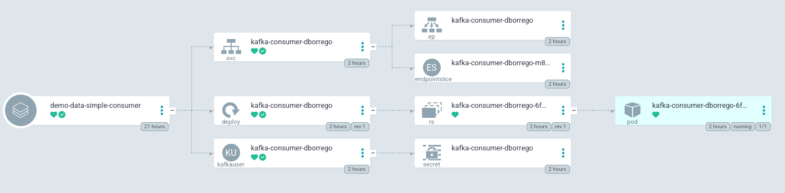

Data streaming
We talked about Kafka topic concept in a previous session. Now it’s time to send and receive data from a topic.
We must understand the consumer, producer and consumer groups to discuss the streaming data concept.
Producers and consumers
The following image shows a topic structure:
A producer is an application that sends data to a topic. If a topic has more than one partition, Kafka balances it along the partitions. Also, each partition is replicated along the Kafka brokers depending on the replica factor number, although our application always writes the data in the leader partition.
The consumer is the application that receives the data from a topic partition. More than one application forms a consumer group.
A consumer group works as a unique functional unit, so the offset is unique for each.
The offset is a point of the latest element consumed by a consumer group. One advantage of using Kafka is that if you modify the offset, the data can be reprocessed.
These concepts are essential to have an optimized Kafka architecture. If we think of an optimal architecture, the ideal scenario would be to have the same number of partitions in a topic as applications in each consumer group.
If we have more applications than partitions, some applications will do nothing. Oppositely, if we have more partitions than applications, the process won’t be parallelized.
The following image shows two optimized consumer groups with different offsets.
Simple data
Once, we’ve yet learned about Kafka concepts, it’s time to play with it.
We can work with many data types in Kafka, in this example, we’re going to show the simplest way to work with simple text data.
To do it, we need an application. We can use a lot of languages and frameworks, in this case, we’re going to use Quarkus and Java 17.
Also, we’ll deploy a topic and users.
The fastest way to deploy this demo section is using ArgoCD, all the information can be found here: https://github.com/dbgjerez/workshop-amq-streams/tree/master/argocd.
As an important point, this is not mandatory, but by using it, you’ll can see something similar to:
Send plain text
Kafka works with serialized data, in this first lab we are going to send information as a string. This is the easiest way to send information, but also it is usually an ineffective way to work, as we often work with structured data.
What do we need to send information to a topic?
-
Kafka cluster: Cluster where create the topic and send the data.
-
Application: Kafka provides a lot of libraries to work in the most popular programming languages, in this case we’ve used Java 17 with Quarkus.
-
Topic: we’ll create a topic to send the information.
-
Kafka user: user with enough roles to write in the specific topic.
For this example, we’ll create a simple cluster with internal and TLS security communication:
apiVersion: kafka.strimzi.io/v1beta2
kind: Kafka
metadata:
name: data-simple-cluster
spec:
entityOperator:
topicOperator: {}
userOperator: {}
kafka:
version: 3.3.1
config:
offsets.topic.replication.factor: 1
transaction.state.log.replication.factor: 1
transaction.state.log.min.isr: 1
default.replication.factor: 1
min.insync.replicas: 1
inter.broker.protocol.version: "3.3"
listeners:
- name: plain
port: 9092
type: internal
tls: false
- name: tls
port: 9093
type: internal
tls: true
authentication:
type: tls
authorization:
type: simple
replicas: 1
storage:
type: ephemeral
zookeeper:
replicas: 1
storage:
type: ephemeralAnd we can use ArgoCD or apply it directly:
oc apply -f content/data/simple/cluster-data-simple.yaml -n demo-data-simpleAnd we can see the pods:
oc get po -n demo-data-simple
NAME READY STATUS RESTARTS AGE
data-simple-cluster-entity-operator-6ddbc94d65-bb6vm 3/3 Running 0 96m
data-simple-cluster-kafka-0 1/1 Running 0 97m
data-simple-cluster-zookeeper-0 1/1 Running 0 97mWe can wait for the Kafka cluster to stay ready:
oc get kafka
NAME DESIRED KAFKA REPLICAS DESIRED ZK REPLICAS READY WARNINGS
data-simple-cluster 1 1 True TrueIt’s very important to create a topic with the correct configuration. In this case, we are only going to see how to send data to it, so we only need one partition without a replica.
The definition is here:
apiVersion: kafka.strimzi.io/v1beta2
kind: KafkaTopic
metadata:
name: books
labels:
strimzi.io/cluster: data-simple-cluster
spec:
config:
# 60m * 60s * 1000ms = 1h
retention.ms: 3600000
# 1gb
segment.bytes: 1073741824
partitions: 1
replicas: 1Once we’ve applied the Kafka cluster definition, we can similarly create the topic:
oc apply -f content/data/simple/topic-data-simple.yaml -n demo-data-simpleWe can wait for the ready status:
oc get kafkatopic books
NAME CLUSTER PARTITIONS REPLICATION FACTOR READY
books data-simple-cluster 1 1 TrueThe next important step is to create the user who the application is going to use. This user needs enough roles to write in the previous topic.
This is the corresponding definition, also we can see more about roles and acls in the security section:
apiVersion: kafka.strimzi.io/v1beta2
kind: KafkaUser
metadata:
name: kafka-producer-{{ .Values.user.name }}
labels:
strimzi.io/cluster: {{ .Values.cluster.name }}
spec:
authentication:
type: tls
authorization:
type: simple
acls:
- resource:
type: topic
name: {{ .Values.topic.name }}
patternType: literal
operations:
- Write
host: "*"
I’ve used Helm to deploy the applications, so you can see some variable placeholders which are overrides in deploy time by ArgoCD.
The user will be created at the same time that the application is in the following step.
Quarkus facilities the way to develop a native application container. The application that sends the data to Kafka is: https://github.com/dbgjerez/quarkus-kafka/tree/main/simple-kafka-producer
At this point, we must create some pieces: the deployment, service and user.
I usually use ArgoCD and Helm to the facility for this step. If you can’t use it, you can render the Helm chart with the following command:
helm template -f demo.values.yaml -n demo-data-simple data/simple/producer | oc apply -f -It’s essential to understand the security, if we inspect the deployment file, we can see references to the secrets which contain the Kafka cluster certificates.
The following picture shows all the objects created by the Helm chart:

If we consult the application logs in debug mode, we can see how the application is sending messages to the topic.
2023-03-29 08:15:27,789 DEBUG [io.sma.rea.mes.kafka] (executor-thread-0) SRMSG18209: Sending message org.eclipse.microprofile.reactive.messaging.Message$$Lambda$5e1799c60041209b57937765b33186671a72f6f8@252653dc to Kafka topic 'books'
2023-03-29 08:15:27,791 DEBUG [io.sma.rea.mes.kafka] (kafka-producer-network-thread | kafka-producer-books-new) SRMSG18211: Message org.eclipse.microprofile.reactive.messaging.Message$$Lambda$5e1799c60041209b57937765b33186671a72f6f8@252653dc sent successfully to Kafka topic-partition 'books-0', with offset 4697The following step is to consume the messages.
Receive plain text
This step is very similar to the previous one, as the cluster and topic have been deployed yet, we will just deploy the application consumer and a user.
This application is a listener over a topic. The idea is to read the data that the previous application is sending to the topic.
This user needs enough roles to read the topic and roles to use the Consumer Group.
This is the corresponding definition, also we can see more about roles and acls in the security section:
apiVersion: kafka.strimzi.io/v1beta2
kind: KafkaUser
metadata:
name: kafka-consumer-{{ .Values.user.name }}
labels:
strimzi.io/cluster: {{ .Values.cluster.name }}
spec:
authentication:
type: tls
authorization:
type: simple
acls:
- resource:
name: cg-simple-kafka-consumer
patternType: literal
type: group
operations:
- Read
host: "*"
- resource:
name: {{ .Values.topic.name }}
patternType: literal
type: topic
operations:
- Read
host: "*"
I’ve used Helm to deploy the applications, so you can see some variable placeholders which are overrides in deploy time by ArgoCD.
The user will be created at the same time that the application is in the following step.
The application that we’re going to use, has been programmed using Quarkus too. In summary, the process is very similar to what we’ve used in the producer application.
I usually use ArgoCD and Helm to the facility for this step. If you can’t use it, you can render the Helm chart with the following command:
helm template -f demo.values.yaml -n demo-data-simple data/simple/consumer | oc apply -f -If you use ArgoCD, you can see easily the objects created by the chart:
If we consult the application logs in info mode, we can see how the application is consuming the messages that the producer is sending.
2023-03-29 06:58:02,300 INFO [io.dbo.ser.BookConsumer] (vert.x-eventloop-thread-0) Book[ title: The Lord of the Rings, Pages: 47 ]Now, we can play with the partitions to show how the consumer group actuates over the topic.